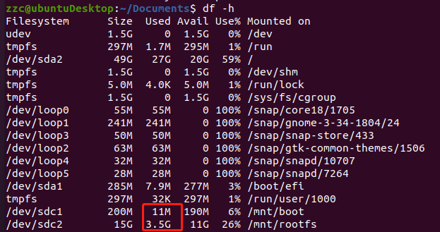
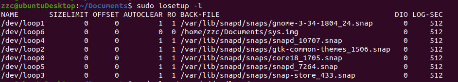
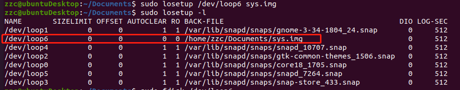
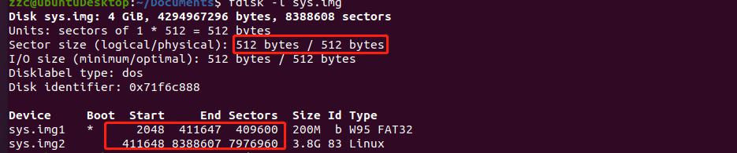
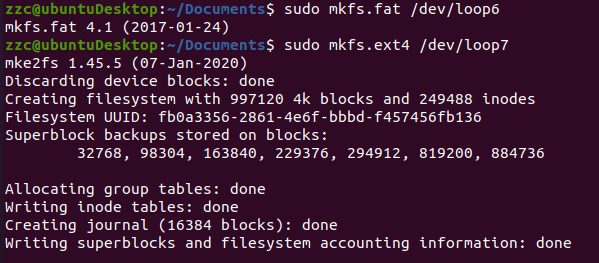

将已有 Linux 系统做成 img 镜像
[TOC]
准备工作
挂载 SD 卡
查看 SD 卡磁盘情况
sudo fdisk -l
找到 SD 卡信息

建立挂载点
sudo mkdir /mnt/boot
sudo mkdir /mnt/rootfs
挂载
sudo mount /dev/sdc1 /mnt/boot/
sudo mount /dev/sdc2 /mnt/rootfs/
查看根文件系统占用大小
df -h

生成空白 img 文件；文件稍微比两个分区占用大一些；这里就搞成 4GB
dd if=/dev/zero of=sys.img bs=4M count=1024
# 完成后输出如下
1024+0 records in
1024+0 records out
4294967296 bytes (4.3 GB, 4.0 GiB) copied, 21.4173 s, 201 MB/s
空白 img 文件分区
将 img 文件和 loop 设备建立联系
先查看当前loop设备
sudo losetup -l

因为 loop 设备已经到 5 了，所以将 img 文件和 loop6 设备建立联系
sudo losetup /dev/loop6 sys.img
查看是否成功
sudo losetup -l

使用 fdisk 分区
- 输入 m 获取帮助
- 输入 n 创建新分区（BOOT）
- 输入 p 或者默认表示创建主分区
- 分区号（1）和起始扇区直接默认回车
- 终止扇区输入
+200M表示创建 200M 的分区供 BOOT 使用 - 输入 t 改变分区类型
- 选择分区 1
- 输入 L 查看所有分区类型码表
- 输入 b 表示转换为 fat32
- 输入 n 创建新分区（rootfs）
- 一路回车直至创建分区成功
- 输入 a 标记引导分区
- 输入 1 将分区 1 标记为可引导
- 输入 w 保存更改
sudo fdisk /dev/loop6
详细输出如下：
Welcome to fdisk (util-linux 2.34).
Changes will remain in memory only, until you decide to write them.
Be careful before using the write command.
Device does not contain a recognized partition table.
Created a new DOS disklabel with disk identifier 0x71f6c888.
Command (m for help): m
Help:
DOS (MBR)
a toggle a bootable flag
b edit nested BSD disklabel
c toggle the dos compatibility flag
Generic
d delete a partition
F list free unpartitioned space
l list known partition types
n add a new partition
p print the partition table
t change a partition type
v verify the partition table
i print information about a partition
Misc
m print this menu
u change display/entry units
x extra functionality (experts only)
Script
I load disk layout from sfdisk script file
O dump disk layout to sfdisk script file
Save & Exit
w write table to disk and exit
q quit without saving changes
Create a new label
g create a new empty GPT partition table
G create a new empty SGI (IRIX) partition table
o create a new empty DOS partition table
s create a new empty Sun partition table
Command (m for help): n
Partition type
p primary (0 primary, 0 extended, 4 free)
e extended (container for logical partitions)
Select (default p):
Using default response p.
Partition number (1-4, default 1):
First sector (2048-8388607, default 2048):
Last sector, +/-sectors or +/-size{K,M,G,T,P} (2048-8388607, default 8388607): +200M
Created a new partition 1 of type 'Linux' and of size 200 MiB.
Command (m for help): t
Selected partition 1
Hex code (type L to list all codes): L
0 Empty 24 NEC DOS 81 Minix / old Lin bf Solaris
1 FAT12 27 Hidden NTFS Win 82 Linux swap / So c1 DRDOS/sec (FAT-
2 XENIX root 39 Plan 9 83 Linux c4 DRDOS/sec (FAT-
3 XENIX usr 3c PartitionMagic 84 OS/2 hidden or c6 DRDOS/sec (FAT-
4 FAT16 <32M 40 Venix 80286 85 Linux extended c7 Syrinx
5 Extended 41 PPC PReP Boot 86 NTFS volume set da Non-FS data
6 FAT16 42 SFS 87 NTFS volume set db CP/M / CTOS / .
7 HPFS/NTFS/exFAT 4d QNX4.x 88 Linux plaintext de Dell Utility
8 AIX 4e QNX4.x 2nd part 8e Linux LVM df BootIt
9 AIX bootable 4f QNX4.x 3rd part 93 Amoeba e1 DOS access
a OS/2 Boot Manag 50 OnTrack DM 94 Amoeba BBT e3 DOS R/O
b W95 FAT32 51 OnTrack DM6 Aux 9f BSD/OS e4 SpeedStor
c W95 FAT32 (LBA) 52 CP/M a0 IBM Thinkpad hi ea Rufus alignment
e W95 FAT16 (LBA) 53 OnTrack DM6 Aux a5 FreeBSD eb BeOS fs
f W95 Ext'd (LBA) 54 OnTrackDM6 a6 OpenBSD ee GPT
10 OPUS 55 EZ-Drive a7 NeXTSTEP ef EFI (FAT-12/16/
11 Hidden FAT12 56 Golden Bow a8 Darwin UFS f0 Linux/PA-RISC b
12 Compaq diagnost 5c Priam Edisk a9 NetBSD f1 SpeedStor
14 Hidden FAT16 <3 61 SpeedStor ab Darwin boot f4 SpeedStor
16 Hidden FAT16 63 GNU HURD or Sys af HFS / HFS+ f2 DOS secondary
17 Hidden HPFS/NTF 64 Novell Netware b7 BSDI fs fb VMware VMFS
18 AST SmartSleep 65 Novell Netware b8 BSDI swap fc VMware VMKCORE
1b Hidden W95 FAT3 70 DiskSecure Mult bb Boot Wizard hid fd Linux raid auto
1c Hidden W95 FAT3 75 PC/IX bc Acronis FAT32 L fe LANstep
1e Hidden W95 FAT1 80 Old Minix be Solaris boot ff BBT
Hex code (type L to list all codes): b
Changed type of partition 'Linux' to 'W95 FAT32'.
Command (m for help): n
Partition type
p primary (1 primary, 0 extended, 3 free)
e extended (container for logical partitions)
Select (default p): p
Partition number (2-4, default 2):
First sector (411648-8388607, default 411648):
Last sector, +/-sectors or +/-size{K,M,G,T,P} (411648-8388607, default 8388607):
Created a new partition 2 of type 'Linux' and of size 3.8 GiB.
Command (m for help): a
Partition number (1,2, default 2): 1
The bootable flag on partition 1 is enabled now.
Command (m for help): w
The partition table has been altered.
Calling ioctl() to re-read partition table.
Re-reading the partition table failed.: Invalid argument
The kernel still uses the old table. The new table will be used at the next reboot or after you run partprobe(8) or kpartx(8).
断开 img 文件和 loop 设备建立联系
sudo losetup -d /dev/loop6
# 检查操作是否成功
sudo losetup -l
# 输出
NAME SIZELIMIT OFFSET AUTOCLEAR RO BACK-FILE DIO LOG-SEC
/dev/loop1 0 0 1 1 /var/lib/snapd/snaps/gnome-3-34-1804_24.snap 0 512
/dev/loop4 0 0 1 1 /var/lib/snapd/snaps/snapd_10707.snap 0 512
/dev/loop2 0 0 1 1 /var/lib/snapd/snaps/gtk-common-themes_1506.snap 0 512
/dev/loop0 0 0 1 1 /var/lib/snapd/snaps/core18_1705.snap 0 512
/dev/loop5 0 0 1 1 /var/lib/snapd/snaps/snapd_7264.snap 0 512
/dev/loop3 0 0 1 1 /var/lib/snapd/snaps/snap-store_433.snap 0 51
将分区和 loop设备建立联系
查看 img 文件分区情况
fdisk -l sys.img
可以看到扇区大小为 512 bytes；并记录下各分区起止扇区编号

将分区和 loop设备建立联系
# -o （起始扇区 * 扇区大小）--sizelimit （扇区数量 * 扇区大小）
sudo losetup -f -o 1048576 --sizelimit 209715200 sys.img
sudo losetup -f -o 210763776 --sizelimit 4084203520 sys.img
1048576 = 2048 * 512 ； 209715200 = 409600 * 512 或 （411647 - 2048 + 1）* 512 （注意： +1）
查看是否成功
sudo losetup -l
# 输出
NAME SIZELIMIT OFFSET AUTOCLEAR RO BACK-FILE DIO LOG-SEC
/dev/loop1 0 0 1 1 /var/lib/snapd/snaps/gnome-3-34-1804_24.snap 0 512
/dev/loop6 209715200 1048576 0 0 /home/zzc/Documents/sys.img 0 512
/dev/loop4 0 0 1 1 /var/lib/snapd/snaps/snapd_10707.snap 0 512
/dev/loop2 0 0 1 1 /var/lib/snapd/snaps/gtk-common-themes_1506.snap 0 512
/dev/loop0 0 0 1 1 /var/lib/snapd/snaps/core18_1705.snap 0 512
/dev/loop7 4084203520 210763776 0 0 /home/zzc/Documents/sys.img 0 512
/dev/loop5 0 0 1 1 /var/lib/snapd/snaps/snapd_7264.snap 0 512
/dev/loop3 0 0 1 1 /var/lib/snapd/snaps/snap-store_433.snap 0 512
格式化分区
sudo mkfs.fat /dev/loop6
sudo mkfs.ext4 /dev/loop7

挂载分区
# 建立挂载点
mkdir rootfs boot
# 挂载
sudo mount /dev/loop6 boot/
sudo mount /dev/loop7 rootfs/
拷贝原有文件到 img
拷贝两个分区的文件
sudo cp -a /mnt/boot/* ./boot/
sudo cp -a /mnt/rootfs/* ./rootfs/
拷贝完成后做一下清理工作
sudo umount rootfs boot
sudo losetup -d /dev/loop6 /dev/loop7
修改卷标（可选）
ext 文件系统
sudo e2label /dev/$partition name
fat 文件系统
sudo mlabel -i /dev/$partition ::name
由于个人水平有限，文中若有不合理或不正确的地方欢迎指出改正